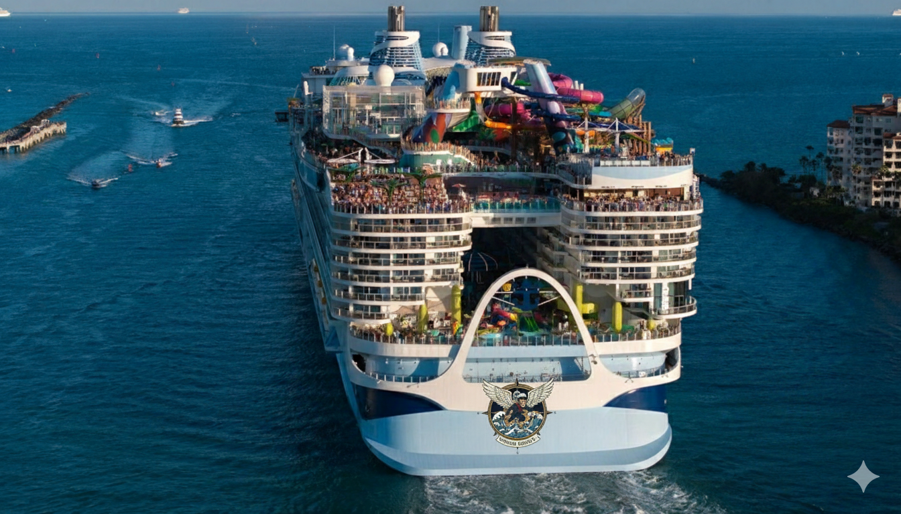
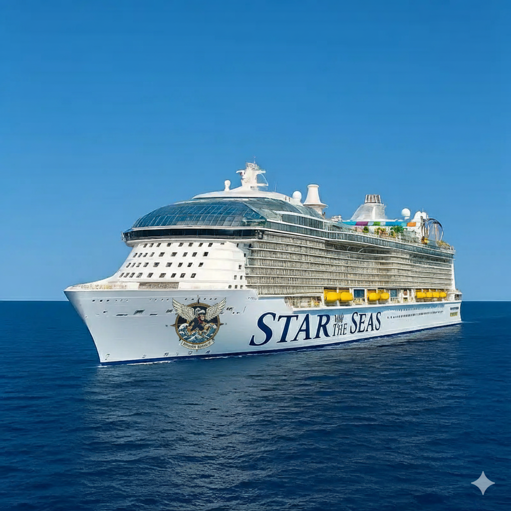
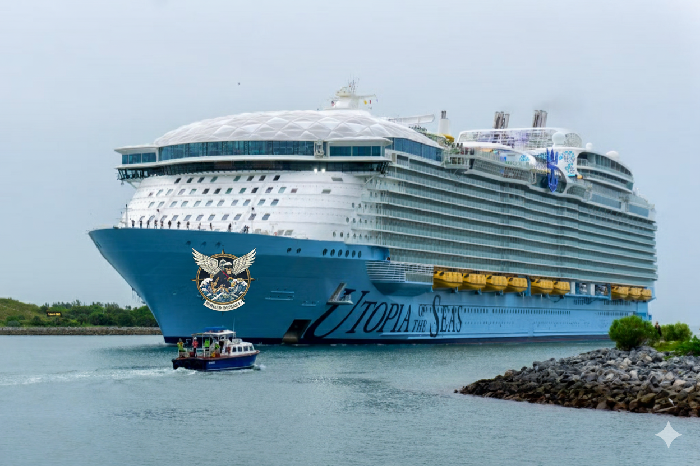

KAPAL PT. MONYET TERBANG
KAPAL PT. MONYET TERBANG
|

PZE TERBANG Economy : 5900 orang Business : 800 orang First-Class : 300 orang |

RZL TERBANG Economy : 6400 orang Business : 900 orang First-Class : 300 orang |

KZG TERBANG Economy : 4700 orang Business : 600 orang First-Class : 300 orang |

MSC OREO Kapasitas Kargo : 24.000 kontainer Panjang 400 meter Lebar 60 meter |
TROPHI PT. MONYET TERBANG
JUARA NASIONAL SHIP 2025Flying Monkey Shipping (FMS) meraih Juara Nasional SHIP 2025 karena berhasil menjadi pionir Maritim 4.0 di Indonesia, menggabungkan efisiensi logistik 98%-On-Time Performance (OTP) melalui FocusTrac-K dengan layanan penumpang Humanis yang unik melalui Panggung Budaya Nusantara. |
THE BEST SHIPMSC Irina (milik FMS) memenangkan penghargaan "The Best Ship 2025" berkat integritas struktur dan keandalan mesin yang luar biasa yang menjamin keamanan maksimum penumpang dan kargo di seluruh rute regional, sekaligus unggul dalam efisiensi bahan bakar dan kepatuhan lingkungan maritim. |
KAPAL GEN-Z #1Utopia Of The Seas (FMS) meraih penghargaan Kapal Terbaik tahun 2025 karena sukses diubah menjadi Kapal Generasi Z (#1) yang berkelanjutan, di mana desain mewah berkapasitas 5.600 orang kini terintegrasi penuh dengan konektivitas 5G, dan lainnya. |